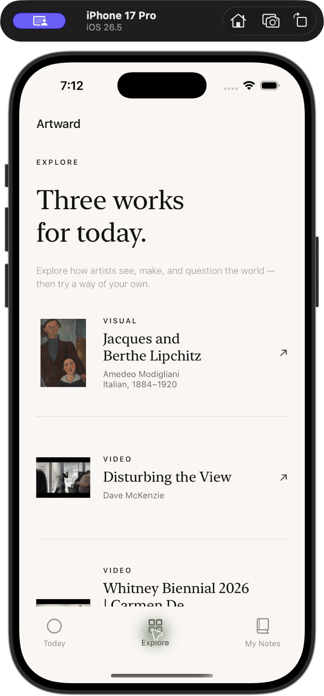

01 / DISCOVER
Three works.
Room to go deeper.
A fresh daily selection of three artworks and artist films. Guided encounters invite you to notice details, explore the artist’s ideas, and connect what you see with your own experience.